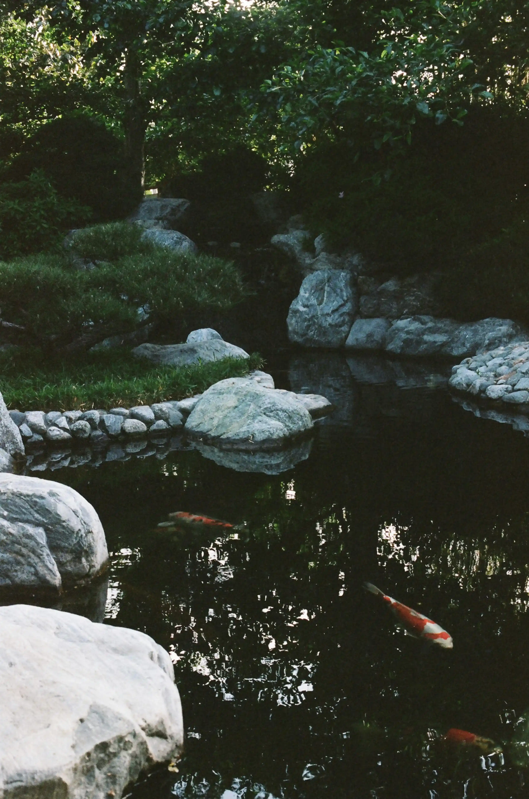
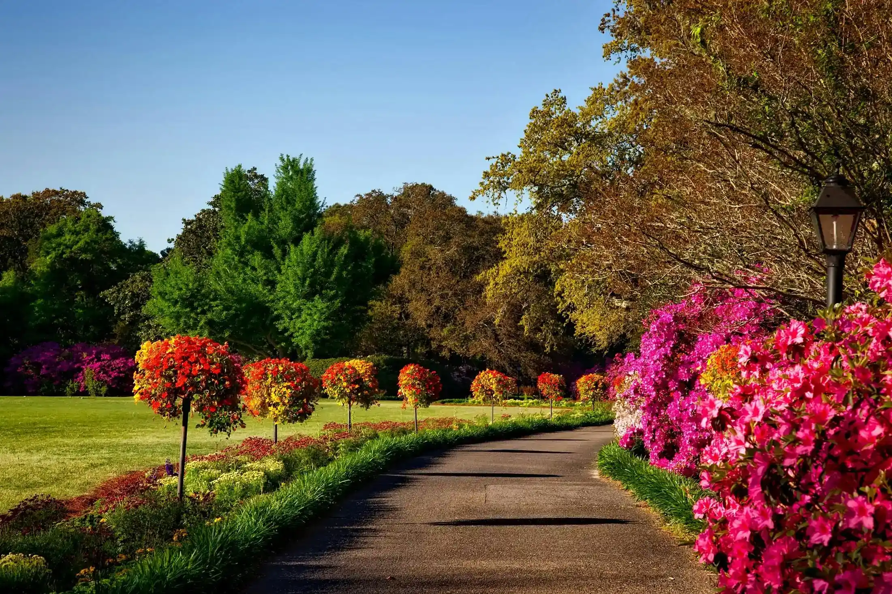

ACCUEIL
NOS SERVICES
Nos Créations et entretiens
Système d'Arrosage
Élagage
Taille de végétaux
Débrouissallage
Installation de bassins d'eau et fontaines
Murs Végétaux
Traitement de palmiers
Plantations
Nos variétés de fleurs
Nos variétés de fruits
Soins des plantes
NOS RÉALISATIONS
FAQ
NOUS CONTACTER
NOS RÉALISATIONS
Retrouvez l'ensemble de nos réalisations dans notre galerie d'images
INSTALLATIONS DE BASSINS D'EAU ET FONTAINES

NOS JARDINS
